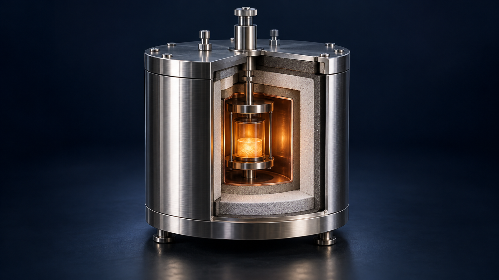
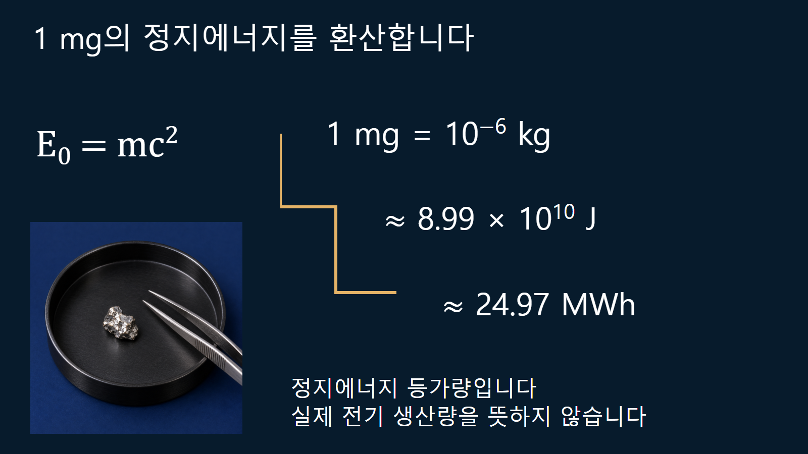
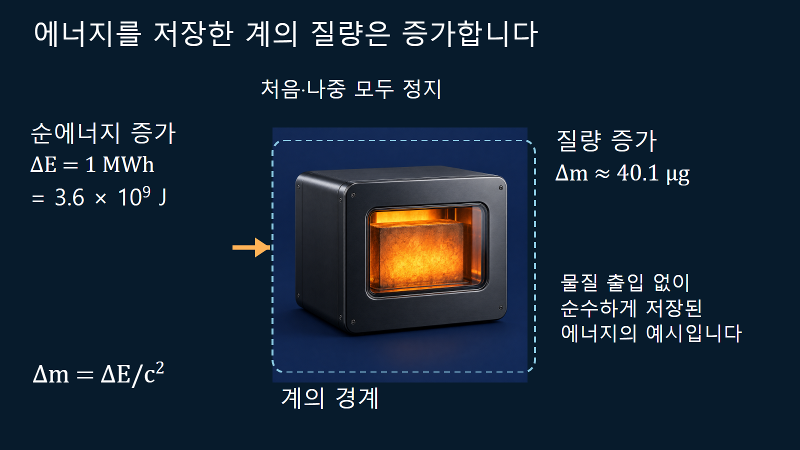

질량·에너지와 핵반응 · 021
질량-에너지 등가성
정지질량 변화가 핵반응 에너지로 나타나는 관계 E=mc²

정지한 계의 에너지와 질량은 E0=mc2로 연결됩니다. 핵반응에서 생성물의 정지질량 합이 반응물보다 작아지면 그 차이가 운동에너지와 방사선 등에 나타날 수 있습니다. 이 식은 연료가 언제나 전부 사라진다는 뜻도, 계산한 에너지가 모두 전기가 된다는 뜻도 아닙니다.
정지에너지와 운동에너지는 같은 항이 아닙니다
m을 불변질량으로 정의하면 E0=mc2는 계의 정지에너지입니다. 움직이는 단일 입자의 총에너지는 E2=p2c2+m2c4를 만족하며, 운동에너지는 K=E−mc2입니다. 입자가 빨라졌을 때 이 표기에서는 불변질량을 바꾸지 않고 총에너지와 운동량이 증가한다고 설명합니다. 광자는 정지질량이 0이지만 E=pc의 에너지와 운동량을 가지므로, m=0을 정지에너지 식에 넣어 광자 에너지가 없다고 결론짓지 않습니다.
c의 제곱은 단위와 환산 규모를 정합니다
진공에서 빛의 속도 c는 SI에서 정확히 299,792,458 m/s로 정의됩니다. kg에 m2/s2를 곱하면 J이므로 mc2는 에너지 단위가 됩니다. 거대한 c2 때문에 작은 질량 변화도 큰 에너지와 대응합니다. 다만 환산계수가 크다는 사실만으로 어떤 반응이 저절로 일어나거나 반응률이 빠르다고 알 수는 없습니다. 반응 경로와 장벽, 에너지·운동량 보존을 따로 확인해야 합니다.
1 mg을 에너지로 환산하는 예시
질량 1 mg은 10−6 kg입니다. 이에 대응하는 정지에너지는 10−6×(299,792,458)2≈8.99×1010 J입니다. 1 kWh=3.6×106 J이므로 약 24,965 kWh, 즉 24.97 MWh와 같습니다. 이는 질량 단위와 에너지 단위의 대응을 보여 주는 계산입니다. 임의의 물질 1 mg을 장치에 넣으면 이만큼의 사용 가능한 전기를 꺼낼 수 있다는 성능 보증이 아닙니다.
핵분열과 핵융합에서는 반응 전후 정지질량 합의 차이만이 방출에너지와 연결됩니다. 연료 전체 질량을 반응에 참여한 질량차로 대신하면 방출량을 크게 잘못 계산합니다. 발전에서는 회수 가능한 열과 열을 전기로 바꾸는 효율도 별도로 적용합니다.

에너지가 들어오면 계의 질량도 달라집니다
외부에서 에너지를 받아 내부에 보관한 계는 그만큼 더 큰 정지에너지를 가질 수 있습니다. 에너지가 순수하게 1 MWh만큼 증가하고 계가 처음과 나중 모두 정지해 있다고 가정하면 질량 증가는 Δm=ΔE/c2=3.6×109/c2≈4.01×10−8 kg, 즉 약 40.1 μg입니다. 가열된 물체나 충전된 저장계의 내부 에너지를 질량과 연결하는 이상적인 수지 예시입니다. 실제 계량에서는 열 유출, 부력과 물질 출입을 통제해야 하므로 일상 저울에서 쉽게 확인된다는 뜻은 아닙니다.
반대로 같은 조건에서 에너지가 외부로 빠져나가면 남은 계의 질량은 감소합니다. 방출된 빛과 물체를 모두 포함한 고립계 전체로 경계를 넓히면 전체 에너지·운동량은 보존됩니다. 입자들의 정지질량 합이 감소하는 것과 고립계의 에너지가 사라지는 것은 구별해야 합니다.

반응의 질량차를 만들 때 같은 대상을 비교합니다
반응물과 생성물 질량의 합을 비교하려면 원자질량인지 핵질량인지 먼저 정합니다. 중성 원자질량에는 전자가 포함되므로 핵질량과 섞으면 전자질량을 빠뜨리거나 이중으로 셀 수 있습니다. 생성핵이 들뜬상태라면 그 들뜬에너지도 질량에 기여합니다. 계산표의 바닥상태 질량만 쓰면서 들뜬상태로 끝난다는 조건을 생략하면 즉시 운동에너지로 나오는 몫을 과대평가할 수 있습니다. 반응 Q값의 상세 계산은 뒤의 게시물에서 이 조건들을 명시해 다룹니다.
| 양 | 정의 | 계산에서의 역할 |
|---|---|---|
| 정지에너지 E0 | mc2 | 선택한 계의 불변질량에 대응합니다 |
| 총에너지 E | 정지에너지와 운동에너지 | 움직이는 계의 에너지 수지에 씁니다 |
| 질량차 Δm | 정의한 전후 상태의 질량 차이 | 부호와 계의 경계를 먼저 정합니다 |
| 발전량 | 외부로 공급한 전기에너지 | 반응에너지에 회수·변환 조건을 적용합니다 |
중성자 포획에서 관계를 직접 검증합니다
NIST·MIT·ILL 연구진은 2005년 실리콘과 황의 중성자 포획에서 질량차와 감마선 에너지를 독립적으로 비교한 정밀 검증을 발표했습니다. [3] [4] 이온의 질량 측정과 결정 회절을 이용한 감마선 파장 측정을 연결한 실험입니다. 감마선만 보는 것이 아니라 핵의 작은 반동에너지도 에너지 수지에 포함합니다. 이 사례는 질량-에너지 관계가 단순한 표어가 아니라 서로 다른 측정으로 검사할 수 있는 관계임을 보여 줍니다. 당시의 정밀도 성과를 현재의 최신 기록이라고 표현하지는 않습니다.
발전소의 에너지 수지로 볼 때 남는 주의점
가정한 계에서 하루 동안 3 GW의 일정한 출력으로 에너지가 외부로 전달되었다면 그 양은 2.592×1014 J이고, 질량 등가량은 약 2.88 g입니다. 이 값은 지정한 에너지 전달량만을 질량으로 환산한 것으로, 하루에 소비되는 핵연료의 질량이 아닙니다. 실제 원자로에서는 물질 유입·유출, 남은 연료와 생성물, 저장된 에너지, 외부로 나간 다양한 방사선을 모두 정의해야 합니다. 출력 단위 GW와 하루 적산 에너지 단위 J를 섞어서 비교하지 않습니다.
질량 등가량과 이용 가능한 에너지를 분리합니다
계산을 시작할 때 정지에너지 전체를 환산하는지, 반응 전후 질량차를 환산하는지, 외부로 전달한 에너지의 질량 등가량을 구하는지 먼저 정합니다. 이 세 질문에는 같은 c2가 등장하지만 입력하는 질량의 의미가 다릅니다. 경계와 상태를 명확히 하면 1 mg의 큰 정지에너지와 에너지 저장에 따른 작은 질량 변화, 원전의 실제 발전량을 서로 모순 없이 설명할 수 있습니다.